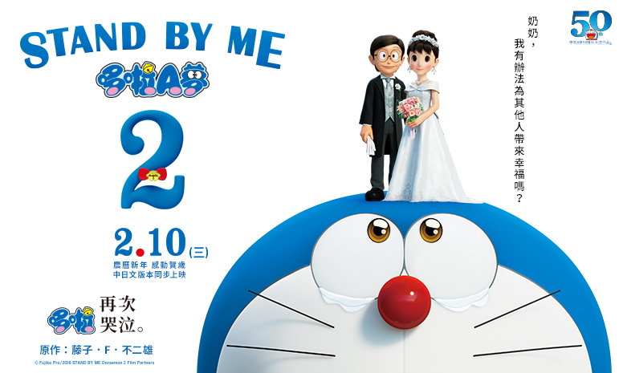
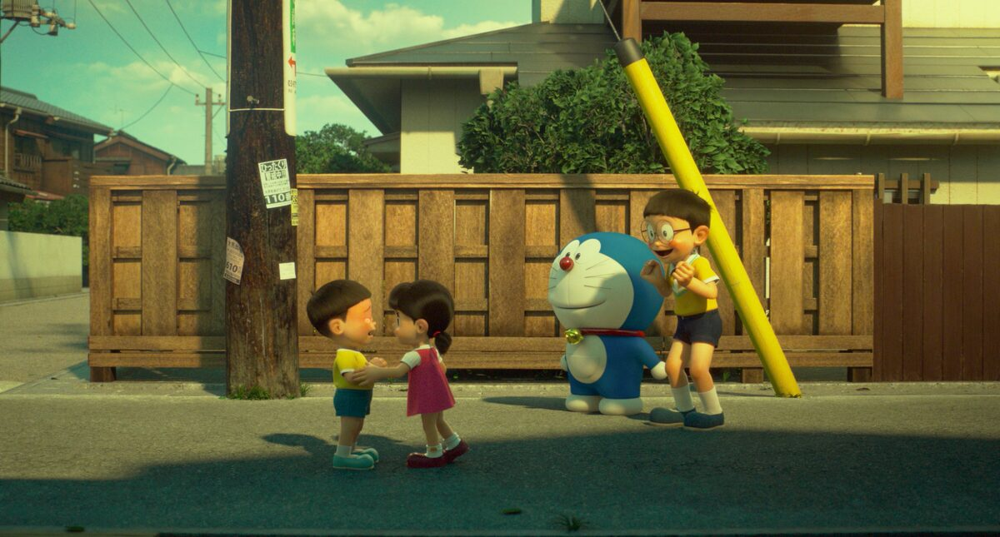

| 最新消息 |
|---|

《STAND BY ME 哆啦A夢 2》於 2020 年冬天在日本上映，是哆啦A夢 50 周年紀念電影、哆啦A夢史上第 2 部 3DCG 電影。作為《STAND BY ME 哆啦A夢》的續集，導演八木龍一與共同導演兼編劇山崎貴再度攜手，以原作《奶奶的回憶》為基礎，並將大雄與靜香結婚當天作為舞台，完整描繪出「大雄與靜香的結婚典禮」，從而展開一場連結「過去」、「現在」、「未來」的嶄新「哆啦A夢」故事。做好再度「哆啦哭泣」的準備了嗎？

「大家都熟悉的這兩人，終於要結婚了。」
哆啦A夢是從 22 世紀來的機器貓，在哆啦A夢與大雄一起生活的「現在」的日常生活中，有一天在房間裡看到了一個熊娃娃，讓他想到這是他幼稚園時去世的奶奶為他縫補的，充滿珍貴回憶的娃娃。想到最喜歡的奶奶，大雄的眼淚止不住，於是打算用時光機到未來去見奶奶！哆啦A夢雖然反對，但是後來拗不過大雄的請求，決定若是大雄不跟奶奶直接見面，就可以偷偷去看她。於是，大雄回到他 3 歲時的「過去」！
「奶奶，我有辦法讓某人得到幸福嗎？」